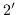
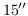
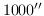

Next: Bandpass and antenna gain Up: Additional monitoring variables Previous: Seeing monitor measurement
Note that tracking errors should be distinguished from pointing errors. Tracking errors are the inability of the antenna drive system to follow the requested path. Pointing errors correspond to the difference between the position that the astronomer requests and the actual position. Tracking errors are caused by flaws in the drive servo system, whereas pointing errors are a sum of tracking errors and errors in the antenna pointing model.
Since October 2003, tracking errors have been saved in the Miriad dataset.
The uv variables corresponding to the rms and
maximum tracking
error in a cycle are axisrms and axismax.
Both the maximum and rms give two tracking error values for each antenna, nominally corresponding to the tracking error in the azimuth and elevation axes. However the ATCA on-line system produces a single composite value, which is replicated for the two axes in the dataset.
When the tracking error is less than , the ATCA on-line
system believes that this error sufficiently small to consider
that the antenna is tracking. However this tolerance is not
generally good enough for 3-mm observations.
The task uvflag
can be used to flag based upon rms tracking error.
To do this, use the selection
pointing subcommand.
| UVFLAG | |
| in=vela.uv | Input visibility dataset. |
| flagval=flag | Flag selected points. |
| select=pointing(15,1000) | Flag when the rms tracking error |
| is between  and . | |